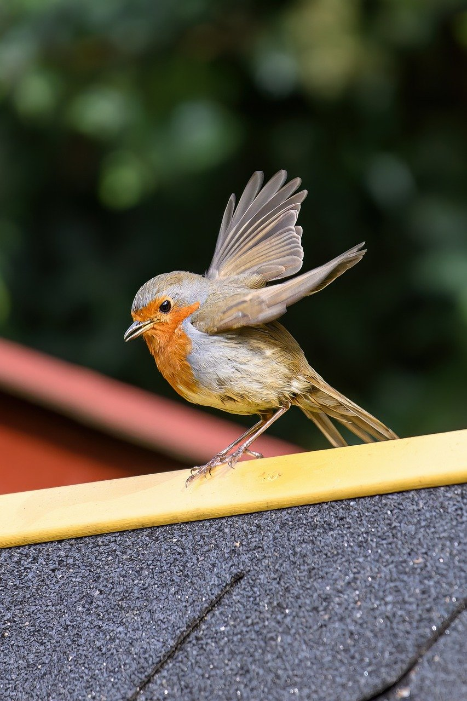

Jiahua Li
Electrical engineer working in Construction. Love hand-on and coding on the side
EDUCATION:
- M.S., Electrical Engineering, New York University
- B.E., Electrical Engineering, The City College of New York
- A.S., Engineering Science, Kingsborough Community College
CERTIFICATES:
- The Fundamentals of Engineering 6/2017
- Project Management Professional 9/2021
SKILLS:
- Technical Skills:Java, Python, C++, SQL, Shell Script, Object Oriented Design, MS Office
- Languages: Cantonese and Mandarin
PROJECTS:
- Mine Sweeper: Final individual project for Intro to Java. Create 16 x 16 mine sweeper game using GUI implemented in a
client-server-database model in Java. Applied knowledge of OOD, GUI, multi-threading, database and computer
networking. (Spring 2021)
- Network Mapping and Exploitation: Lab Assignment in Network Security. In a virtual lab network of five devices,
perform port scan using Nmap to discover the target vulnerability from Kali machine. Use Metasploit exploit framework
to exploit the vulnerability for administrative access. Install persistence Meterpreter service on the target to create
backdoor for future access. (Summer 2020)
- Firewall Configuration: Lab Assignment in Network Security. Designed and implemented a stateful firewall policy
using iptable in Linux. The incoming and outgoing traffics of the internal machine were controlled and monitored within
a virtual lab network of five devices. (Summer 2020)
EXPERIENCES:
- Assistant Resident Engineer, Port Authority of New York & New Jersey, New York, NY 3/2018 - Present
- Finished two-years rotation program within different departments of PANYNJ: Construction, Design, Quality
Assurance, Program Management, Material
- Working experience with consultants, designers, facilities, project managers, contractors and FAA
representatives on varied infrastructure projects at JFK and LGA airport.
- Project management and coordination: perform field inspection and testing; prepare engineering estimate;
review payment applications; organize progress meetings and provide updates to senior management
HONORS/AWARDS:
- Recipient, NYU Scholarship, New York University Fall/2019
- Recipient, Zitrin Scholarship, The City College of New York Fall/2016 - Spring/2017
- Recipient, MENY Scholarship, The Municipal Engineers of The City of New York Fall/2016
- Recipient, Dean’s List student, The City College of New York 2015 - 2017
- Recipient, The Professor Leon Katz’37 Scholarship, The City College of New York Fall/2016
- Recipient, Guttman Transfer Scholarship Spring/2015 - Fall/2016
- Recipient, Alumni Association Scholarship, Kingsborough Community College Spring/2015
- Recipient, Dean’s List student, Kingsborough Community College Spring/2015
Contact Me